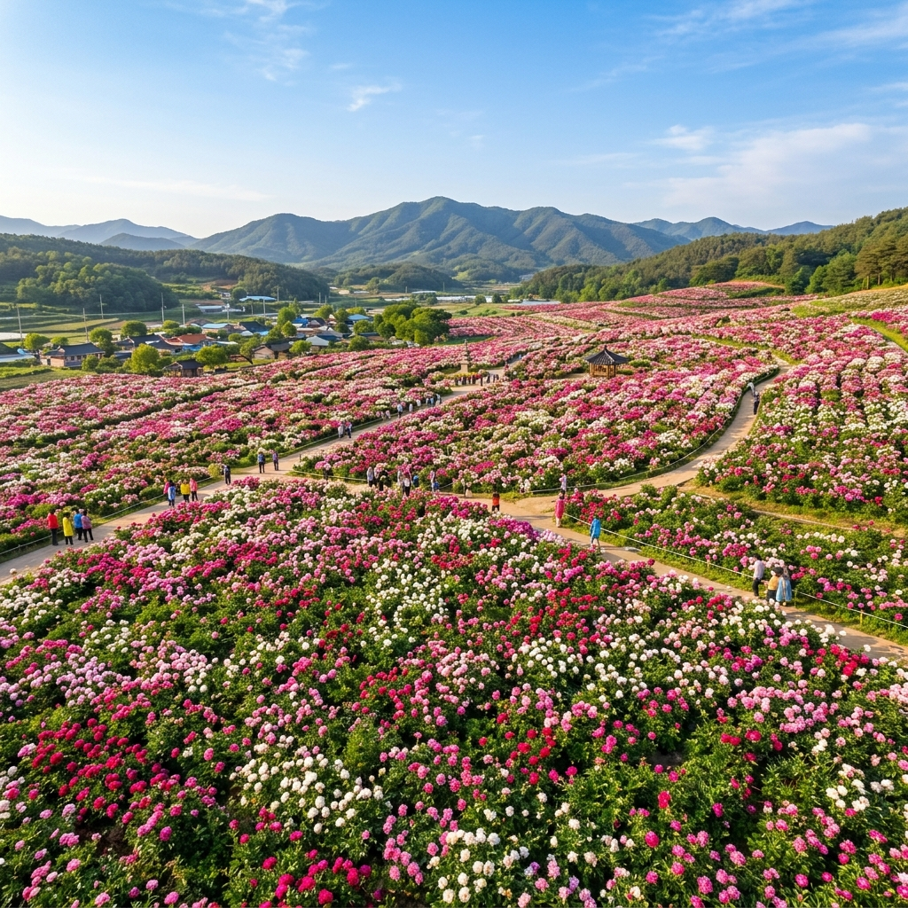
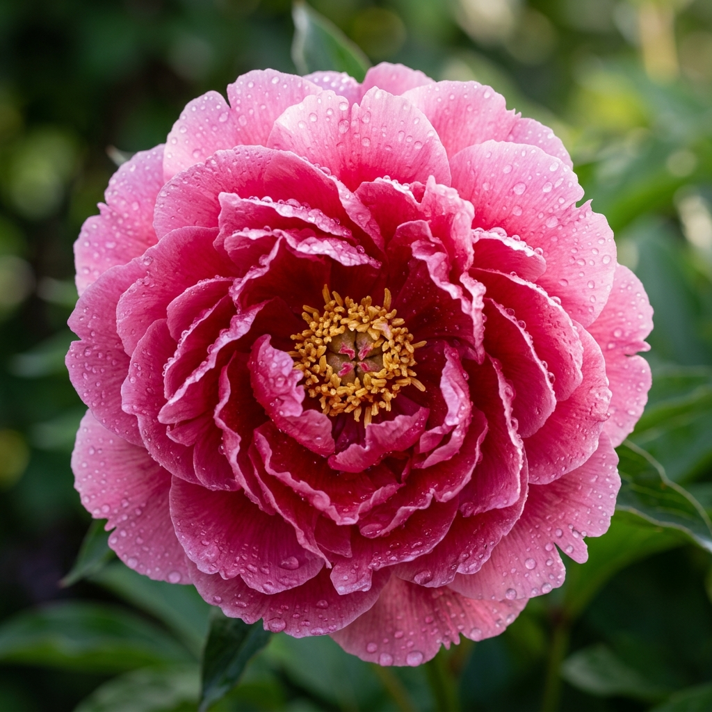
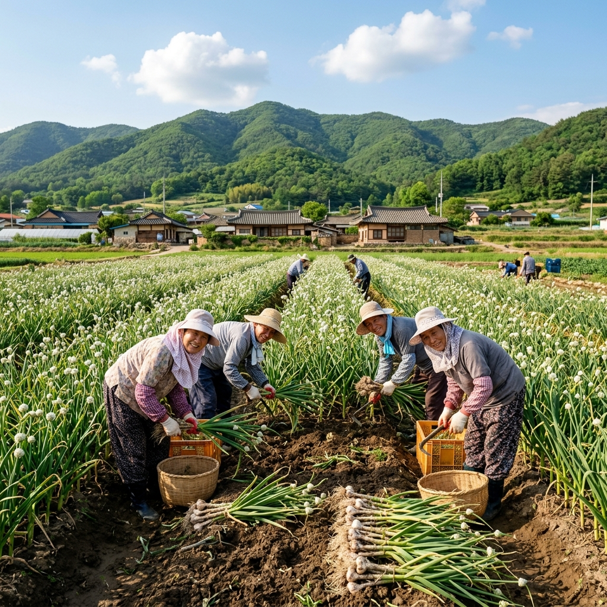

의성 작약공원 2026 — 마늘 고장에서 피어나는 분홍빛 작약 인생샷 명당 완벽 가이드
경상북도 의성군은 전국 마늘 생산량 1위로 유명한 도시이지만, 매년 5월 중하순이 되면 작약꽃으로 더 유명해집니다. 탐스럽고 화려한 분홍빛·흰빛 작약이 광활한 공원을 가득 채우면, SNS에는 의성 작약 인생샷이 넘쳐납니다. 함안 합천의 작약과 함께 경상도를 대표하는 봄꽃 명소로 자리매김한 의성 작약공원의 2026년 완벽 방문 가이드를 정리했습니다.
01. 의성 작약공원 — 어떤 곳인가?
의성 작약공원은 경상북도 의성군 봉양면 일원에 조성된 작약 테마 공원입니다. 의성군이 관내 유휴 농지를 활용해 조성한 이 공원은 매년 규모를 넓혀가며 현재 약 3만 평 이상의 작약 군락을 갖추고 있습니다. 분홍, 진분홍, 흰색, 자주색 등 다양한 품종의 작약이 뒤섞여 피어나는 모습은 그야말로 장관입니다.
작약(芍藥, Paeonia lactiflora)은 모란(목단)과 자주 혼동되지만 엄연히 다른 식물입니다. 모란이 목본 식물(나무 형태)인 반면, 작약은 초본 식물(풀 형태)로 매해 땅에서 새 줄기가 올라옵니다. 꽃의 크기도 작약이 더 크고 풍성한 편이며, 개화 시기도 모란보다 약 2~3주 늦습니다. 5월 말의 작약꽃은 '스프링 로즈'라는 별명처럼, 장미보다도 화려하고 탐스러운 풍성함으로 보는 이를 압도합니다.
의성군은 약 500년 역사의 의성 마늘과 함께 작약을 지역 대표 작물 및 관광 자원으로 육성 중입니다. 공원 내 작약은 관상용과 약용 두 가지 목적으로 재배되고 있으며, 한약재로서의 작약은 뿌리를 사용합니다. 아름다운 꽃과 실용적 가치를 함께 지닌 보기 드문 작물입니다.

[의성 작약공원 전경 — 분홍빛 물결] / AI 생성 이미지
02. 2026년 개화 예측 — 절정은 언제?
작약의 개화 시기는 기온 변화와 일조량에 크게 영향을 받습니다. 경북 의성의 기후 특성상 내륙 분지 지형으로 일교차가 크며, 이로 인해 꽃색이 더욱 선명하게 발현되는 특성이 있습니다.
| 구분 | 예상 기간 | 비고 |
|---|
| 꽃봉오리 형성 | 2026년 5월 8~12일 | 봉오리 부풀기 시작 |
| 개화 시작 | 2026년 5월 14~17일 | 일부 꽃 개화 |
| 준절정 | 2026년 5월 18~21일 | 50~60% 개화 |
| 절정 (추천) | 2026년 5월 22~30일 | 전면 만개, 꽃 크기 최대 |
| 낙화 시작 | 2026년 6월 1일 전후 | 꽃잎 떨어짐 시작 |
작약은 꽃봉오리 상태에서 만개까지의 속도가 매우 빠른 편입니다. 특히 기온이 25℃를 넘는 날이 이어지면 이틀 만에 절정에서 낙화로 이어지는 경우도 있습니다. 따라서 방문 전 반드시 해당 주간 의성군 날씨를 확인하고, 고온 경보가 예보될 경우 예정보다 1~2일 앞당겨 방문하는 것을 권장합니다.
03. 작약 vs 모란 — 헷갈리지 않는 구별법
공원을 방문하면 "이게 모란이에요, 작약이에요?"라고 묻는 분들이 많습니다. 두 꽃을 쉽게 구별하는 방법을 알아두면 더욱 깊이 있는 관람이 가능합니다.
🌸 작약과 모란 구별법
• 줄기: 작약은 매년 땅에서 새 줄기가 올라오는 초본(풀), 모란은 목질화된 나무줄기가 있는 목본(나무)
• 잎 질감: 작약의 잎은 반들반들한 광택이 있고, 모란의 잎은 회청색을 띠며 약간 까슬함
• 꽃 형태: 작약은 꽃잎이 풍성하고 동글동글, 모란은 꽃잎이 더 크고 뒤로 젖혀짐
• 개화 시기: 모란이 먼저(4월 말~5월 초), 작약이 나중(5월 중순~말)
• 향기: 작약의 향이 더 강하고 달콤한 편
04. 포토 명당 & 사진 꿀팁
의성 작약공원에서 최고의 인생샷을 남기기 위한 포인트를 정리합니다.
명당 1 — 작약 군락 중앙 통로: 공원 내부를 가로지르는 비포장 황토 통로 양쪽으로 작약이 빼곡히 심어져 있습니다. 이 통로를 정면으로 놓고 시작점에서 광각으로 촬영하면 꽃 터널 효과를 얻을 수 있습니다.
명당 2 — 경북 산릉선 배경 구도: 작약공원 북쪽 끝자락에서 남쪽 방향을 바라보면 의성 분지를 둘러싼 낮은 산릉선이 배경으로 들어옵니다. 하늘 + 산 + 작약 꽃밭의 3단 구도로, 경북의 전통적인 자연 풍경과 꽃이 어우러지는 사진이 완성됩니다.
명당 3 — 하얀 꽃밭 코너: 분홍 작약 군락 옆에 흰 작약 구역이 별도로 조성되어 있습니다. 흰 작약을 배경으로 흰색 또는 파스텔 의상을 입은 인물을 찍으면 마치 동화 속 한 장면 같은 몽환적 분위기의 사진이 나옵니다.

[의성 작약 만개 접사 — 탐스러운 꽃잎의 질감] / AI 생성 이미지
05. 의성 기본 정보 & 교통 안내
| 항목 | 내용 |
|---|
| 위치 | 경상북도 의성군 봉양면 일원 (작약공원) |
| 입장료 | 무료 (의성군 운영) |
| 주차 | 현장 주차 가능 (무료, 단 절정기 주말 조기 만차) |
| 서울 → 의성 자가용 | 중부내륙고속도로 → 상주 IC → 의성 방향, 약 2시간 50분 |
| 서울 → 의성 고속버스 | 동서울버스터미널 → 의성버스터미널 (약 3시간 10분, 1일 6회) |
| 대구 → 의성 | 동대구역에서 의성 방향 버스 (약 1시간 20분) |
| 화장실 | 공원 내 간이 화장실 설치 (절정기 한시 운영) |
의성은 대중교통이 다소 불편한 편입니다. 의성버스터미널 도착 후 작약공원까지는 택시를 이용해야 합니다(약 15분, 기본요금 내외). 렌터카를 이용하면 의성과 인근 안동, 상주를 묶어 경북 내륙 봄꽃 투어로 구성할 수 있습니다.
06. 의성 마늘 고장 특산물 체험 & 맛집
작약공원 방문 후 의성의 특산물 체험도 빠뜨리지 마세요. 의성은 국내 마늘 생산량의 약 15%를 담당하는 최대 산지입니다. 5월은 마늘 수확을 2~3주 앞둔 시기로, 농장 체험을 원한다면 의성군청 농업기술센터(054-830-6000)에 문의해 체험 농장 연결을 받을 수 있습니다.
의성 마늘 요리 추천: 의성 시내 식당들에서는 마늘을 듬뿍 넣은 마늘 통닭, 마늘 돼지국밥, 마늘 순대국을 즐길 수 있습니다. 특히 마늘 통닭구이는 통 마늘을 닭 내부에 채워 구워내는 의성 토박이 방식으로, 마늘의 알싸한 향이 닭고기에 깊이 배어 있어 한 번 맛보면 잊기 어렵습니다.
의성 사과도 이 지역의 대표 특산물입니다. 일교차가 큰 경북 내륙 기후 덕분에 당도가 높고 껍질이 선명한 붉은색을 띱니다. 5월에는 사과 꽃(화사한 흰 꽃)이 피는 시기이기도 해서, 작약공원에서 사과 과수원 방향으로 드라이브하면 또 다른 봄꽃 여행이 펼쳐집니다.
07. 의성 주변 함께 가볼 만한 곳
의성 당일치기 봄꽃 완전 코스 (약 8시간)
🌸 작약공원 (1시간 30분) → 🍜 의성 시내 마늘 요리 점심 (1시간) → ⛩️ 의성 관덕당 (30분) → 🏞️ 빙계계곡 신록 산책 (1시간) → 🏰 고운사 (1시간) → 귀가
관덕당은 의성읍내에 위치한 조선 시대 지방 관아 건물로, 의성군 향토 문화재입니다. 고즈넉한 고택과 오래된 느티나무가 어우러진 분위기는 짧은 역사 탐방으로 안성맞춤입니다.
빙계계곡은 의성군 춘산면에 위치한 천연기념물(제174호) 구역입니다. 여름에는 얼음이 얼고 겨울에는 더운 바람이 나오는 신비로운 지형으로 유명합니다. 5월의 빙계계곡은 신록이 절정을 이루며 청량한 계곡물 소리와 함께 피로를 씻어내기 최적의 장소입니다.
고운사는 의성군 단촌면 고운사길에 위치한 통일신라 시대 창건 사찰로, 신라의 대문장가 최치원(고운 孤雲)의 이름을 딴 유서 깊은 절입니다. 봄철 사찰 내 신록과 고즈넉한 분위기는 작약공원의 화려함 뒤에 찾아오는 조용한 힐링을 선사합니다.

[의성 마늘밭 풍경 — 경북 내륙 봄의 정취] / AI 생성 이미지
08. 방문 준비 체크리스트
✅ 의성 작약공원 방문 체크리스트
□ 절정기 날씨 예보 확인 (기온 25℃ 이상 연속 예보 시 방문 앞당기기)
□ 편한 운동화 착용 (공원 내 비포장 황토 길 있음)
□ 자외선 차단제 & 모자 (5월 경북 낮 햇빛은 강렬함)
□ 카메라 배터리 & 여분 메모리 (사진을 많이 찍게 됨)
□ 물 & 간식 준비 (공원 내 매점 운영 여부 현장 확인 필요)
□ 의성 마늘 특산물 쇼핑 목록 (마늘, 마늘 가공품, 의성 사과 등)
09. 작약꽃 사진 보정 꿀팁
스마트폰으로 작약 사진을 찍은 후 편집 앱에서 최상의 결과물을 얻는 방법을 알려드립니다.
색상 조정: 분홍 작약의 경우 '채도(Saturation)' 를 +10~+20 범위로 높이면 색감이 더 생생해집니다. 단, 너무 높이면 인공적으로 보이므로 +25를 초과하지 마세요.
선명도(Clarity) & 텍스처(Texture): 꽃잎의 섬세한 주름과 결을 살리려면 텍스처 값을 +15~+25 정도 올리는 것이 효과적입니다. 라이트룸 모바일, 스냅시드, 어도비 익스프레스 모두 이 기능을 지원합니다.
배경 흐림 보정: 스마트폰 인물 모드로 찍을 경우 꽃잎 가장자리가 부자연스럽게 처리될 수 있습니다. 이때 선택 편집(마스킹) 도구를 사용해 꽃과 배경의 경계선을 수동으로 조정하면 DSLR 못지않은 자연스러운 배경 흐림을 얻을 수 있습니다.
10. 2026년 합천 핫들생태공원 작약과 비교 — 어디 갈까?
이미 국내 작약 명소로 유명세를 탄 경남 합천 핫들생태공원과의 비교를 원하는 분들이 많습니다.
| 구분 | 의성 작약공원 | 합천 핫들생태공원 |
|---|
| 위치 | 경북 의성군 봉양면 | 경남 합천군 율곡면 |
| 규모 | 약 3만 평 이상 | 약 2만 5천 평 |
| 연계 관광 | 마늘마을, 고운사, 빙계계곡 | 황매산 철쭉, 합천 영상테마파크 |
| 접근성 | 서울에서 약 3시간 (다소 멈) | 서울에서 약 3시간 30분 |
| 특징 | 의성 마늘 특산물 체험 연계 | 산과 작약의 대비 구도 |
두 곳 모두 훌륭하지만, 경북권 여행을 계획 중이라면 의성, 경남권이나 황매산 철쭉과 함께 묶으려면 합천을 선택하는 것이 효율적입니다.
#의성작약공원
#작약꽃2026
#경북여행
#의성여행
#봄꽃명소
#인생샷
#작약인생샷
#5월봄나들이
#의성마늘
#경상북도여행